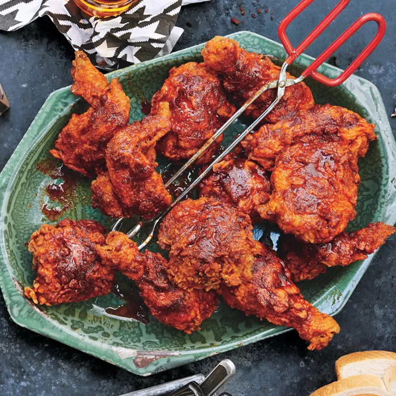

Main Page
Nashville-Style Hot Chicken

Ingredients
- 2 | 3-1/2 to 4-lb. chickens, each cut into 10 pieces (breasts halved)
- 1 | tablespoon freshly ground black pepper
- 2 | tablespoons plus 4 tsp. kosher salt
- 4 | large eggs
- 2 | cups buttermilk or whole milk
- 2 | tablespoons vinegar-based hot sauce (such as Tabasco or Texas Pete)
- 4 | cups all-purpose flour
- 6 | tablespoons cayenne pepper
- 2 | tablespoons dark brown sugar
- 1 | teaspoon chili powder
- 1 | teaspoon chili powder
- 1 | teaspoon paprika
- Optional | White bread and pickles
Steps
- Step 1 | Toss chicken with black pepper and 2 Tbsp. salt in a large bowl. Cover and chill at least 3 hours.
- Step 2 | Whisk eggs, buttermilk, and hot sauce in a large bowl. Whisk flour and remaining 4 tsp. salt in another large bowl.
- Step 3 | Fit a Dutch oven with thermometer; pour in oil to measure 2 inches. Heat over medium-high heat until thermometer registers 325°. Pat chicken dry. Working with 1 piece at a time, dredge in flour mixture, shaking off excess, then dip in buttermilk mixture, letting excess drip back into bowl. Dredge again in flour mixture and place on a baking sheet.
- Step 4 | Working in 4 batches and returning oil to 325 degrees between batches, fry chicken, turning occasionally, until skin is deep golden brown and crisp and an instant-read thermometer inserted into thickest part of pieces registers 160° for white meat and 165° for dark, 15–18 minutes. Transfer to a clean wire rack set inside a baking sheet. Let oil cool slightly.
- Step 5 | Whisk cayenne, brown sugar, chili powder, garlic powder, and paprika in a medium bowl; carefully whisk in 1 cup frying oil. Brush fried chicken with spicy oil. Serve with bread and pickles.
- Step 6 | DO AHEAD: Chicken can be seasoned 1 day ahead. Keep chilled.